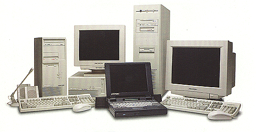

Upoznavanje AT i novijih tipova kompjutera v.3.0
Intro | Hardware | Software | HOME
Uputstvo namenjeno korisnicima-poèetnicima u oblasti
kompjuterskih tehnologija
autor: Radojica SIMOVIÆ, © ProCOM, BEOGRAD, 13-jun-2004.
support@procom.co.yu